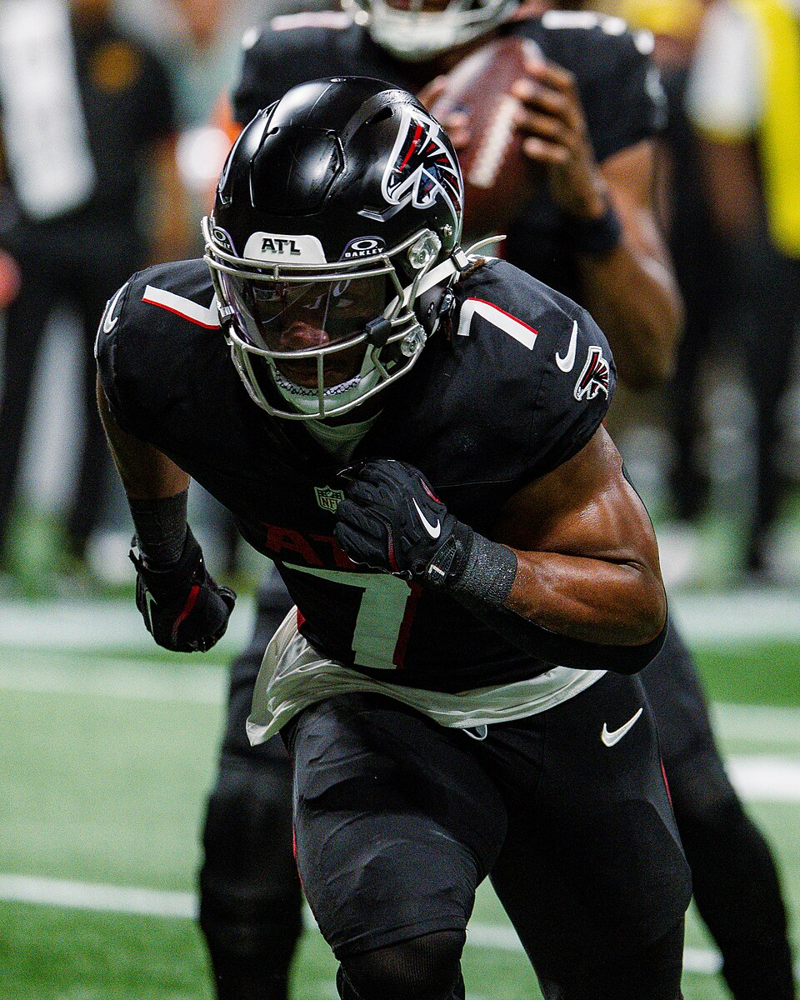

Week 4
Power Rankings
ceefry is 3-3, has scored more points than anyone, and owns the best healthy roster in the league. That is good enough for first. The team on top of the table drops to third.

Bijan Robinson: All-Pro Reels / CC BY-SA 4.0
Marking our own homework
Our top two split, and our seventh scored the most
We put Willis’s Willies first last week. They lost to Skinned Knee Varsity by 15.72, missed the median, and dropped from 4-0 to 4-2. We put Irrational Exuberance! second and geauxjack went 2-0 to become the only team in the league with one loss.
The one we got most wrong was ceefry. We ranked him seventh, noted that he had the second-best roster in the league and had scored fewer points than seven teams, and then he put up 217.99, the highest score of the season by 13 points. Roster strength has been saying ceefry is good for three weeks. This week we are listening to it.
The ten
Week 4
Fryder-Man: Brand New Day · ceefry · 3-3
First in points scored at 507.5 and first in healthy roster strength, with a .500 record because the first two weeks gave him 149.80 against the week 1 high and a win that missed the median. Bijan Robinson went for 39.30, Tyler Shough finally got the superflex start after scoring 25.70 and 23.38 on the bench in the first two weeks, and returned 25.30, and Brock Bowers scored 25.60 on the bench behind a tight end who scored 20.80. He is also the man with the highest single score in league history, 246.3 in the 2024 playoffs, and he won the title that year from the six seed.
Who Dey and the Blowfish · TheSoop · 4-2
Second in points, second in roster strength, and the deepest bench in the league by more than 200 projected points. Harold Fannin fixed the tight end hole with 21.10, Javonte Williams added 20.80, and Joe Burrow scored 23.08 in the superflex. Geno Smith scored 26.54 on the bench, and we would make the same call again, because Burrow is the greatest quarterback of all time. The worry is Josh Allen, who took a helmet to the knee late against the Chargers and is expected on this week's injury report.
Irrational Exuberance! · geauxjack · 5-1
Top of the table on his own and we still have him third. He is eighth in healthy roster strength, his bench is the thinnest in the league at 524.0 projected, and Justin Jefferson left week 3 with an ankle sprain after scoring 4.70. He has also scored fewer points than two teams below him. What he does have is a lineup that keeps landing: George Kittle 25.20 in the flex, Ja'Marr Chase 22.80, and the best head-to-head record in league history. The computer that drafted Chase for him deserves a share of the credit.
Willis’s Willies · KnightRider_85 · 4-2
Sam Darnold came back and scored 28.16 in the superflex, which was the best quarterback score on the roster, and the Willies lost both results anyway. Isaiah Likely scored 2.80, Malik Nabers 6.10, and the three running backs combined for 29.90. Breece Hall is now listed out. He is still third in roster strength and he still carries four starting quarterbacks, so the thing everybody mocked in September is the thing keeping him in the top half.
Skinned Knee Varsity · brunosilvadev · 4-2
Two sweeps in a row, including the win over last week's number one. He paid $13 for the Minnesota defence and it scored 23.00, the best defensive score on any roster in the league. Stafford added 21.90 and Kenneth Walker 21.80. His two-quarterback room was the lowest-projected in the league until Jayden Daniels got hurt, and he has made it work for two straight weeks, which is harder to argue with each time. Seventh in healthy roster strength with Travis Etienne out.
Bison Circle Buttercups · CaptainClark · 4-2
Scored 181.97, the second-highest total of the week, and won by 66.79. Brock Purdy had 31.78 and Jeremiyah Love 21.40. The reason he is not higher is the injury list: Caleb Williams and Puka Nacua are both listed out, and without them his roster projects as the weakest healthy group in the league. Aaron Rodgers scored 24.18 on the bench while Cam Ward took the superflex for 10.94, which did not matter this week and might next.
LeBron Offensive Foul · evspade · 2-4
The defending champion has lost four results in a row, and this week the roster that justified ranking him highly took a bad hit. De'Von Achane tore his ACL in the first half against Kansas City and is done for the season, and Nico Collins is listed out. With them his projection falls from the best in the league to sixth, the largest injury loss anyone has taken. Bo Nix scored 25.64 and Christian McCaffrey and Derrick Henry combined for 45.00, so the healthy core is still good. Nobody has ever repeated here and this is the first week it looks likely to stay that way.
4th and 35 · derrek777 · 2-4
Jahmyr Gibbs scored 41.90, the best score by any starter in the league, and it went into a double loss. Jayden Daniels is out with a dislocated elbow and derrek777 responded by spending $11 on two replacement quarterbacks. He started the $7 one, Jameis Winston, for 6.62, while the $4 one, Deshaun Watson, scored 22.26 on the bench. Fifth in healthy roster strength, and better than his record.
Rancor Fajitas · ProfessorMerlyn · 1-5
Nobody in the league has had more points scored against him. His 540.9 against is 55 points clear of the next team, and this week he drew ceefry's 217.99. He started Patrick Mahomes over Justin Herbert this time and got that call right by 2.20, and James Cook scored 22.90. The roster is ninth in projected strength, so not all of 1-5 is luck. He plays geauxjack this week and went into this season as one of only two managers with a winning record against him, 4-3.
OneManEra · 1-5
115.18 was the lowest score of the season so far, and he is last in points scored by 32. Kirk Cousins scored 22.22 on his bench while Drake Maye started and scored 6.76, which is the second week running that Cousins has outscored Maye from the bench. The roster itself projects fourth-best in the league, with Maye and Jalen Hurts both healthy, so there is more here than the table shows. Drake London (26.40) and Tee Higgins (19.50) did their part. He is still the only founder with a ring.
What moved
Where we disagree with the table
Two places. ceefry is sixth in the standings and first here, because points scored and healthy roster strength both put him first and the record is carrying two unlucky weeks. geauxjack is first in the standings and third here, because his roster projects eighth and his bench is the thinnest in the league, and a 5-1 start built on starters landing every week is hard to repeat when one of them, Jefferson, is already hurt.
Injuries moved more of this list than results did. evspade and CaptainClark both lost more than 200 projected points to the injury report this week. The next-largest loss was geauxjack's, at 131.4.